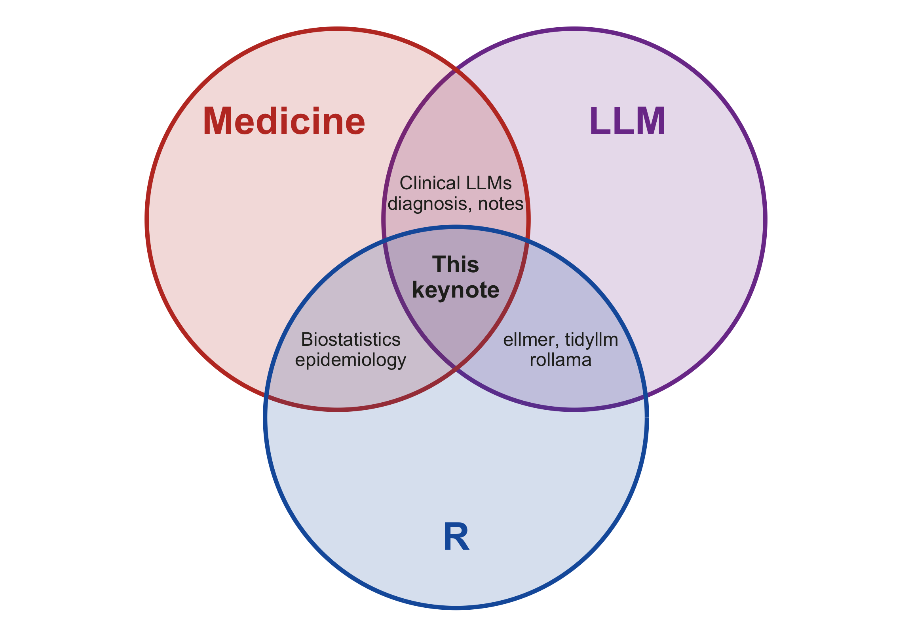
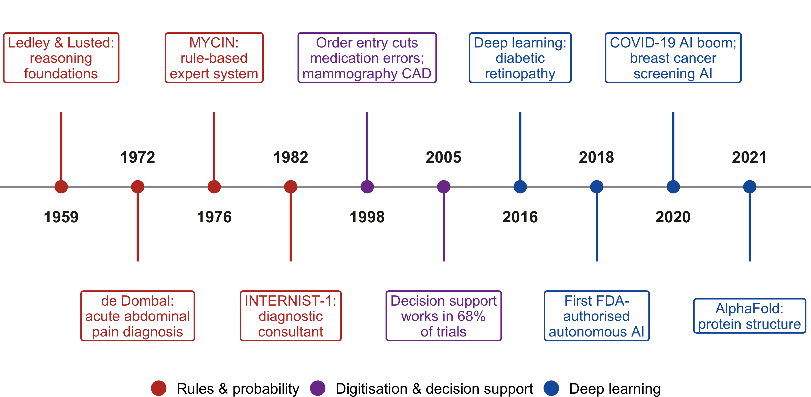
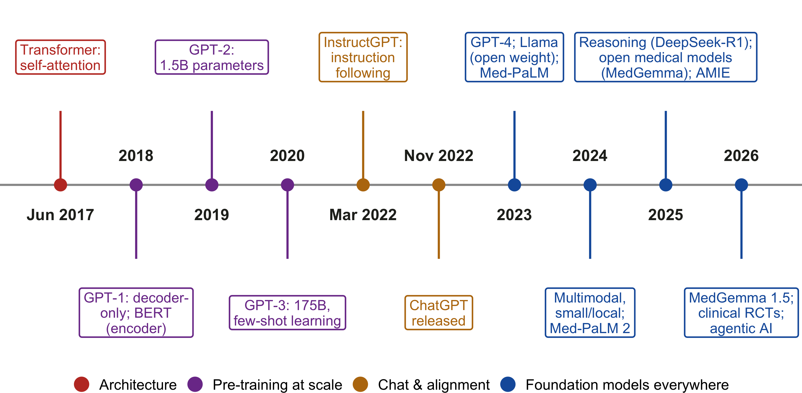

Keynote · R Conference Malaysia 2026, Sunway University
Department of Biostatistics & Research Methodology, Universiti Sains Malaysia
wnarifin.github.io
21 November 2026

Diagnosis
Differential diagnosis, probabilistic reasoning (Ledley and Lusted 1959; de Dombal et al. 1972)
Medical imaging
Detection and classification in radiology, retina, skin (Doi 2007; Gulshan et al. 2016)
Decision support
Alerts, order checking, guideline reminders (Bates et al. 1998; Kawamoto et al. 2005)
Prediction
Risk scores and early warning, e.g. sepsis (Wong et al. 2021)
Documentation
Records, notes, discharge summaries: a major source of clinician burden
Evidence synthesis
Searching, screening and extracting data from studies (Gartlehner et al. 2024)
Discovery
Protein structure, drug targets (Jumper et al. 2021)
Research & education
Statistical analysis, teaching, assessment
Common thread: large volume, complex reasoning, repetitive work, where humans tire and err.

Bayes’ theorem was the first “AI” at the bedside
Knowledge was hand-coded by experts (expert system): powerful but brittle and hard to maintain
Lesson: workflow fit and real-world evaluation decide success
A cautionary tale
A widely implemented proprietary sepsis model: AUC 0.63 on external validation, missed 67% of sepsis cases, but alerts for 18% of all inpatients – alert fatigue (Wong et al. 2021)
Speed without methodology gives models that cannot be used
… and text is exactly what large language models are good at

Vaswani et al. (2017); Radford et al. (2018); Devlin et al. (2019); Radford et al. (2019); Brown et al. (2020); Ouyang et al. (2022); OpenAI (2022); OpenAI (2023); Touvron et al. (2023); Singhal et al. (2023); Singhal et al. (2025); Guo et al. (2025); Sellergren et al. (2025); Google Research and Google DeepMind (2026); McDuff et al. (2025); O’Sullivan et al. (2026)
But …
Of 519 LLM evaluation studies (2022–2024), only 5% used real patient-care data (Bedi et al. 2025). So, is it valid?
| Task | Example study | Key finding |
|---|---|---|
| Diagnosis | AMIE, 302 differential diagnoses of complex cases (McDuff et al. 2025) | Top-10 accuracy: AMIE alone 59.1% vs unassisted clinicians 33.6% |
| Physician RCT (Goh et al. 2024) | LLM access did not improve physicians’ diagnostic reasoning; but the LLM alone scored 16 percentage points higher than physicians with conventional resources | |
| Cardiology RCT (O’Sullivan et al. 2026) | Fewer clinical errors with AMIE assistance (13.1% vs 24.3%) | |
| Documentation | Ambient AI scribes, RCTs (Lukac et al. 2025; Afshar et al. 2025) | Less time in notes, less work exhaustion; occasional inaccuracies |
| Summarisation | 4 clinical summarisation tasks (Van Veen et al. 2024) | LLM summaries were superior to medical experts’ in 36% of cases (equivalent in 45%) |
| Information extraction | 1026 lung cancer, 191 pediatric osteosarcoma pathology reports (Huang et al. 2024) | classification accuracy: 89% and 98.6% respectively |
| Evidence synthesis | Data extraction from RCTs for systematic review (Gartlehner et al. 2024) | 96.3% accuracy over 160 data elements from 10 papers |
| Dialogue / history-taking | Conversational AMIE (Tu et al. 2025) | Higher diagnostic accuracy than primary care physicians in text-based consultations |
An LLM is an assistant, not a replacement
These are statistical and governance problems, not only engineering ones
So… is still relevant for LLMs in medicine?
For the second column, is a first-class citizen
1. Inference
Cloud APIs (OpenAI, Claude, Gemini, …) and local models via Ollama: same R session, one interface (Wickham et al. 2026; Gruber and Weber 2025)
2. Prototyping research ideas
Test an idea in minutes, next to your data, your models and your plots
3. Text → data
Extract structured variables from notes and papers straight into data frames (Brüll 2026; Arifin 2026b)
4. Evaluation
Accuracy, agreement, CIs, trials of LLM tools: biostatistics’ home turf (Couch 2025d)
5. Simple apps
Shiny + chat UI for patient education or data Q&A in a few lines (Cheng et al. 2026)
6. Reproducible reporting
Prompts, model versions, seeds and results in one Quarto document
7. Privacy-first local LLMs
Patient data stay on your machine with Ollama + R (Arifin 2026a)
8. Trusted in clinical research
R-based submission packages reviewed by the FDA (R Consortium 2024)
9. RAG, tools & agents
Retrieval over guidelines, tool calling, MCP: R functions as tools (Kalinowski and Falbel 2026; Couch 2025c)
| Purpose | Packages |
|---|---|
| Unified chat interface (cloud + local) | ellmer (Wickham et al. 2026), tidyllm (Brüll 2026) |
| Local models via Ollama | rollama (Gruber and Weber 2025), ollamar (Lin and Safi 2025) |
| LLM over data frame columns | mall (Ruiz 2025b) |
| Retrieval-augmented generation | ragnar (Kalinowski and Falbel 2026), rchroma |
| Evaluation | vitals (Couch 2025d) |
| Apps | shinychat (Cheng et al. 2026), querychat (natural language → SQL over data) |
| Coding assistants | btw (Aden-Buie et al. 2026), gander (Couch 2025b), chores (Couch 2025a), chattr (Ruiz 2025a), gptstudio (Nivard et al. 2025) |
| Model Context Protocol | mcptools (Couch 2025c): let assistants use your R session, and R use MCP tools |
| Vision | kuzco (computer vision with LLMs) (Hull 2025) |
Today’s showcase: rollama → tidyllm → ellmer, from basic to more advanced
| # | Medical task (Parts 1 & 2) | Package | What we do |
|---|---|---|---|
| 1 | Patient communication, translation | rollama |
Explain a finding in simple Malay, locally |
| 2 | Triage / text classification | rollama |
Zero-shot classification of complaints |
| 3 | Information extraction | tidyllm |
Structure clinical notes into a data frame |
| 4 | Extraction + evaluation | ellmer |
Extract labs from many notes, check against gold standard |
| 5 | Decision support (calculation) | ellmer |
Tool calling: R computes eGFR, the LLM explains |
| 6 | Patient education, grounded in a document | ragnar |
Retrieval (RAG) over a Malay Wikipedia page |
| 7 | Simple app | ellmer + shinychat + ragnar |
Patient-education chatbot that cites the page |
All examples use open-weight models through Ollama on a local PC, except where noted. Full code and output: demo document (next slides).
rollama · tidyllm · ellmer · ragnar · shinychat
rollama: basic local inferencerollama: zero-shot triage classificationtidyllm: structuring clinical notesellmer: extraction at scale, then evaluationellmer: tool calling (eGFR in )ragnar: grounding answers in a document (RAG)ellmer + shinychat + ragnar: a patient-education appseed, temperaturewnarifin.github.io/explore_llm_with_r (Arifin 2026a)
Structuring clinical notes with and LLMs: wnarifin.github.io/workshop.html (Arifin 2026b)
rollama (local), structure data with tidyllm, grow with ellmer and ragnarMedicine × LLM × : the centre of the Venn diagram is ours to build
Thank you!
wnarifin@usm.my · wnarifin.github.io
Slides: wnarifin.github.io/2026-r-conf
Dr. Wan Nor ArifinR Conference Malaysia 2026Medicine × LLM × R